Lehrkraft-Anleitung
Coursepilot verbindet deinen KI-Client mit deinen Moodle-Kursen. Die KI liest den Kursstand, schlägt dir einen Plan vor und baut Abschnitte, Seiten, Aufgaben und Tests erst, wenn du im Chat ausdrücklich zustimmst. Diese Anleitung führt dich durch die Einrichtung und die ersten Schritte.
Vorher klären
- Freigabe: Deine Moodle-Administration muss dir den Fernzugriff freigegeben haben, meist über eine Kohorte. Ohne Freigabe scheitert die Verbindung. Dass du im Kurs Lehrkraft bist, reicht dafür nicht.
- Adresse: Deine Anschlussadresse lautet immer
https://<moodle-adresse>/local/coursepilot/mcp.php, also z. B.https://moodle.meine-schule.de/local/coursepilot/mcp.php. - KI-Client: Claude ist der verlässlichste Weg. ChatGPT funktioniert ebenfalls; dort kann OpenAI die Schreibrechte für eigene Connectoren je nach Tarif und Oberfläche ändern. Codex ist ein eigenes Programm und unten getrennt beschrieben.
- Einmal anmelden: Bei der ersten Verbindung öffnet sich die Moodle-Seite „Coursepilot verbinden“. Melde dich dort mit deinem Moodle-Konto an und wähle Verbindung erlauben. Einen Zugangsschlüssel musst du nie abtippen.
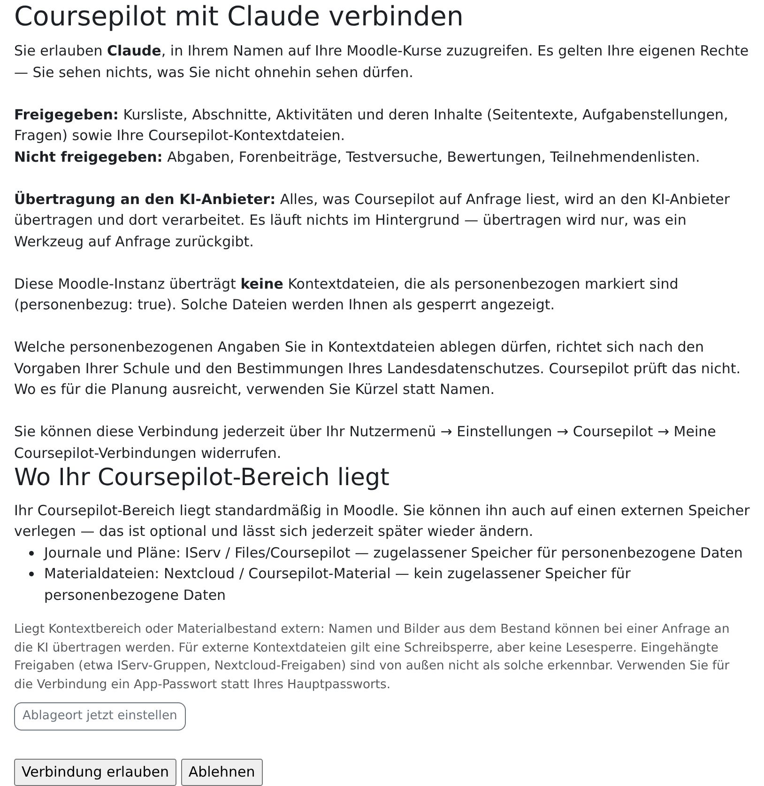
Connector in Claude einrichten
Gilt für claude.ai im Browser und die Claude-Desktop-App. Eigene Connectoren gibt es in allen Tarifen; im kostenlosen Tarif ist nur einer möglich. Die roten Rahmen in den Bildern markieren, wo du klickst.
- Klick unten links auf deinen Namen und wähle Einstellungen.
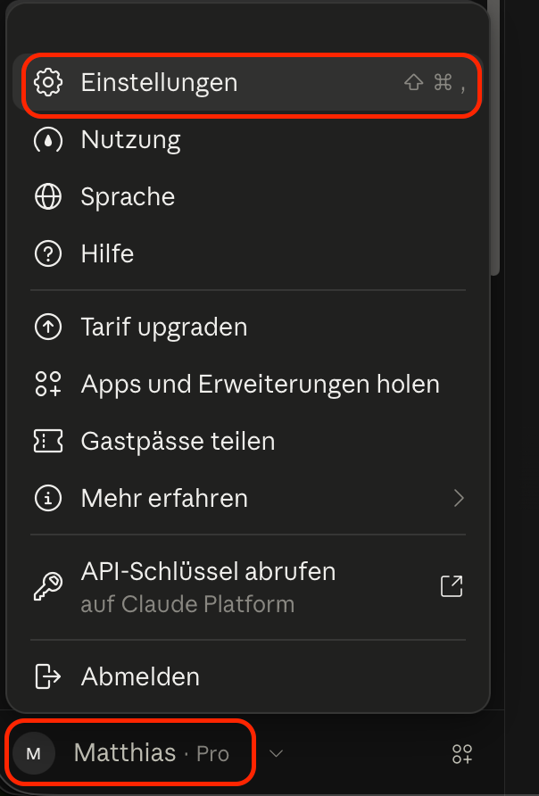
Claude: Kontomenü unten links, „Einstellungen“. - Wähl links Konnektoren, dann oben rechts Hinzufügen › Benutzerdefinierten Connector hinzufügen.
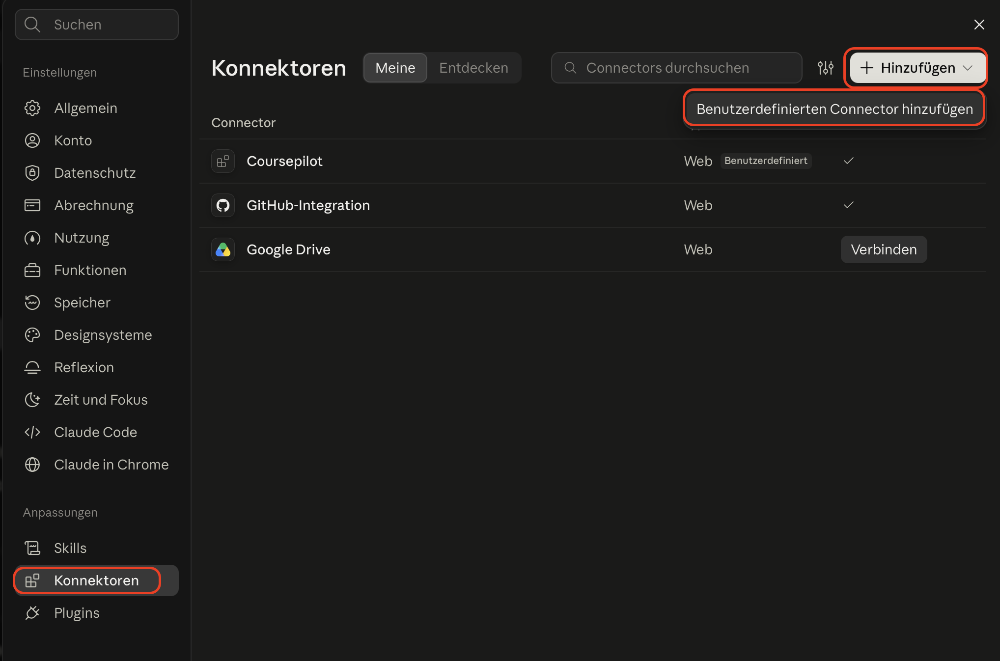
Claude: Konnektoren › Hinzufügen › Benutzerdefinierten Connector hinzufügen. - Trag als Name
Coursepilotund deine Anschlussadresse ein, dann Weiter.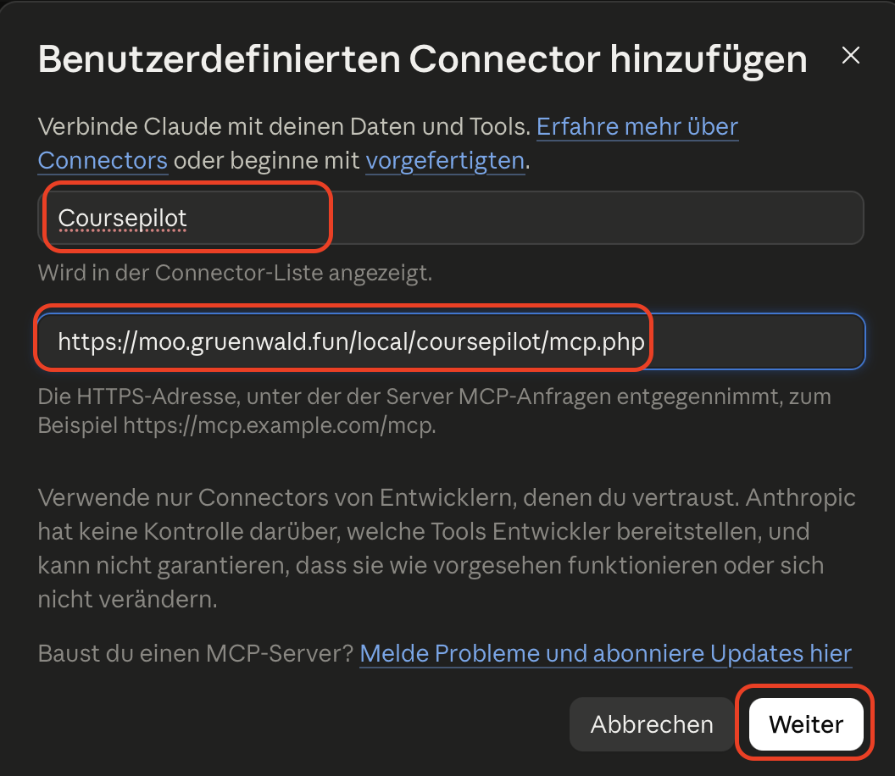
Claude: Name und Anschlussadresse eintragen, „Weiter“. - Claude erkennt die Anmeldung selbst: Jetzt anmelden und Automatisch registrieren sind schon gewählt. Klick auf Hinzufügen. Es öffnet sich die Moodle-Seite „Coursepilot verbinden“: Melde dich an und wähle Verbindung erlauben.
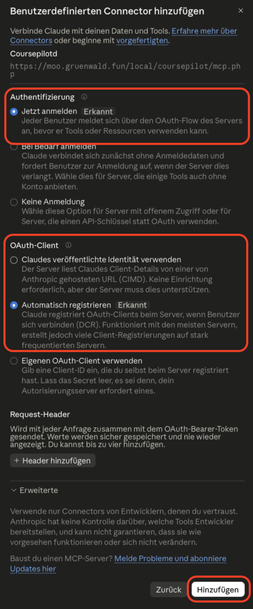
Claude: Anmeldung und OAuth-Client wie erkannt lassen, „Hinzufügen“. - Prüf im Chat über das Werkzeug-Menü, dass Coursepilot eingeschaltet ist.
Team- oder Enterprise-Konto: Dort legt die Organisations-Verwaltung den Connector einmal an. Danach verbindest du dich selbst unter Einstellungen › Konnektoren.
Claude Code (Terminal): claude mcp add --transport http coursepilot https://<moodle-adresse>/local/coursepilot/mcp.php, danach rufst du in Claude Code /mcp auf und meldest dich an.
Connector in ChatGPT einrichten
Die folgenden Schritte gelten für die Weboberfläche (chatgpt.com). Eigene MCP-Verbindungen werden als Plugins angelegt. Ob dein Konto sie anlegen und nutzen darf, hängt von den Konto- und Workspace-Freigaben ab.
Ob ChatGPT Coursepilot auch schreiben lässt oder nur lesen, legt OpenAI je nach Tarif und Oberfläche fest und hat es schon geändert. Klappt das Lesen, aber nicht das Anlegen im Kurs, prüf auch die Werkzeugfreigabe und die Fehlermeldung: Moodle-Rechte oder ein Pluginfehler können ebenfalls die Ursache sein. Claude ist eine Alternative.
- Öffne in ChatGPT Plugins. Falls die Funktion in deinem Konto fehlt, prüf mit der Workspace-Verwaltung die Freigabe für eigene MCP-Verbindungen.
- Wähle das Plus-Symbol und Benutzerdefinierten MCP-Server erstellen (Create custom MCP server).
- Trag als Name
Coursepilot, deine Anschlussadresse und als Anmeldung OAuth ein. Bestätige den Risikohinweis und wähle Als Plugin erstellen (Create as a plugin). - Die Moodle-Seite „Coursepilot verbinden“ öffnet sich: Melde dich an und wähle Verbindung erlauben.
- Installiere das angelegte Plugin. Öffne einen neuen Chat, tippe
@und wähle Coursepilot aus. Die Menübezeichnungen können je nach Oberfläche abweichen.
Prüf bei einer Schreibaktion die angezeigten Werkzeugargumente und gib die Aktion ausdrücklich frei. Ob dein Plus-Konto Coursepilot tatsächlich schreiben lässt, muss mit einem Test im eigenen Kurs bestätigt werden.
Coursepilot in Codex einbinden
Die Bilder zeigen die Einrichtung in der ChatGPT-Desktop-App im Codex-Modus; Kommandozeile und Editor-Erweiterung teilen dieselbe Einstellung (~/.codex/config.toml).
- Wechsle oben links von ChatGPT zu Codex und öffne Plugins.
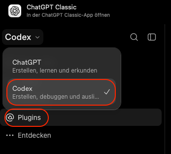
Codex: oben links „Codex“ wählen, dann „Plugins“. - Wähl oben rechts Hinzufügen › Benutzerdefinierten MCP-Server erstellen.
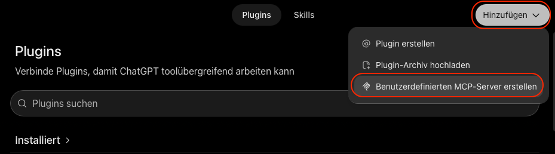
Codex: Hinzufügen › Benutzerdefinierten MCP-Server erstellen. - Trag als Name
coursepilotein, wähl bei Verbindung Server-URL und trag deine Anschlussadresse ein. Authentifizierung bleibt OAuth. Setz das Häkchen bei „Ich habe das verstanden und möchte weitermachen“ und klick Als Plugin erstellen.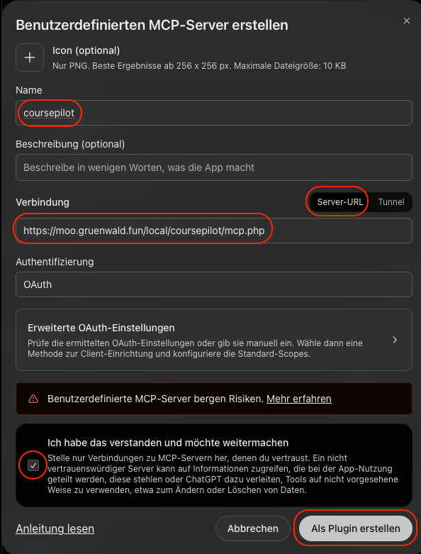
Codex: Name, Server-URL, Häkchen, „Als Plugin erstellen“. - Im Fenster „coursepilot verbinden“ klickst du Weiter zu coursepilot. Es öffnet sich die Moodle-Seite „Coursepilot verbinden“: Melde dich an und wähle Verbindung erlauben.
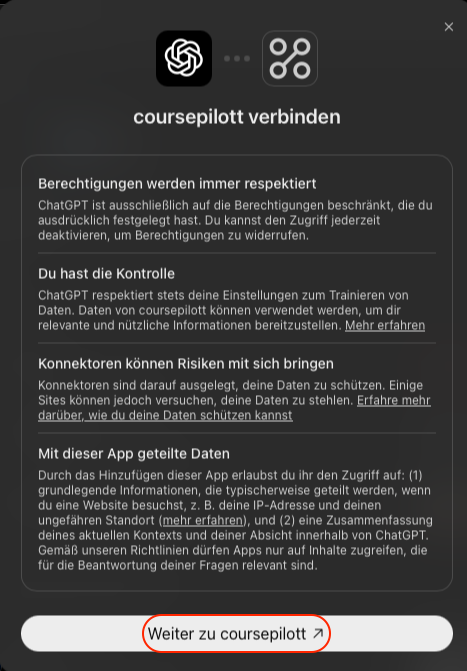
Codex: „Weiter zu coursepilot“, danach in Moodle erlauben.
Kommandozeile statt App:
codex mcp add coursepilot --url https://<moodle-adresse>/local/coursepilot/mcp.php
codex mcp login coursepilotDer zweite Befehl öffnet den Browser mit der Moodle-Seite „Coursepilot verbinden“.
Andere MCP-Clients
Jeder Client, der entfernte MCP-Server mit Anmeldung unterstützt, funktioniert nach demselben Muster:
- Transport: Streamable HTTP (nicht SSE, nicht lokal/stdio)
- Adresse:
https://<moodle-adresse>/local/coursepilot/mcp.php - Anmeldung: OAuth. Der Client registriert sich selbst; Client-ID oder Geheimnis brauchst du nicht.
- Einmal auf der Moodle-Seite Verbindung erlauben wählen.
Verbindungen verwalten
Alle deine Verbindungen stehen in Moodle unter Nutzermenü › Einstellungen › Coursepilot › Meine Coursepilot-Verbindungen und lassen sich dort einzeln widerrufen. Eine Verbindung bleibt bis zu 30 Tage ohne Nutzung angemeldet.
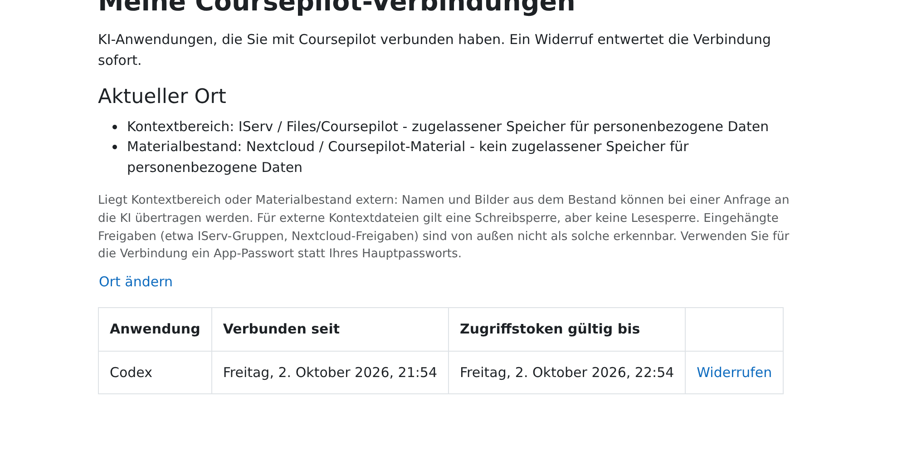
Eigenen Speicher anbinden (IServ, Nextcloud)
Coursepilot legt Pläne, Profile und Notizen standardmäßig in Moodle unter Meine Dateien ab (Ordner coursepilot). Das reicht für den Anfang. Hast du die Dateien lieber im Schulspeicher, bindest du ihn als WebDAV-Verbindung an. Voraussetzung: Deine Moodle-Administration hat WebDAV-Verbindungen für Lehrkräfte freigeschaltet. Fehlt das, zeigt dir die Ortswahlseite einen fertigen Text, den du an die Administration schicken kannst.
IServ Schritt für Schritt
- Öffne in Moodle eine Stelle, an der du eine Datei hochladen kannst (z. B. Meine Dateien). Wähl im Dateiauswahl-Fenster links WebDAV, dann Repository konfigurieren.
- Leg eine neue Verbindung an und füll sie so aus:
Name z. B. IServWebDAV-Typ HTTPS WebDAV Server webdav.<iserv-adresse>, z. B.webdav.igs-roderbruch.org(ohnehttps://)WebDAV-Pfad /Authentifizierung Basic WebDAV Server-Port leer lassen (bei HTTPS gilt 443) WebDAV Server-Nutzer und -Kennwort deine IServ-Zugangsdaten - Speichere. Im Dateiauswahl-Fenster erscheinen jetzt die IServ-Bereiche (
Files,Groups…). - Öffne Nutzermenü › Einstellungen › Coursepilot › Coursepilot: Ablageorte für Kontextbereich und Materialbestand.
- Wähl für Kontextbereich die IServ-Verbindung und leg einen Ordner unterhalb von
Filesan oder wähl einen, z. B.Files/Coursepilot. Andere IServ-Bereiche sind nicht wählbar. - Wähl für Materialbestand ebenso einen Ordner (nicht denselben wie für den Kontextbereich) oder In Moodle lassen. Dann Einrichten abschließen.
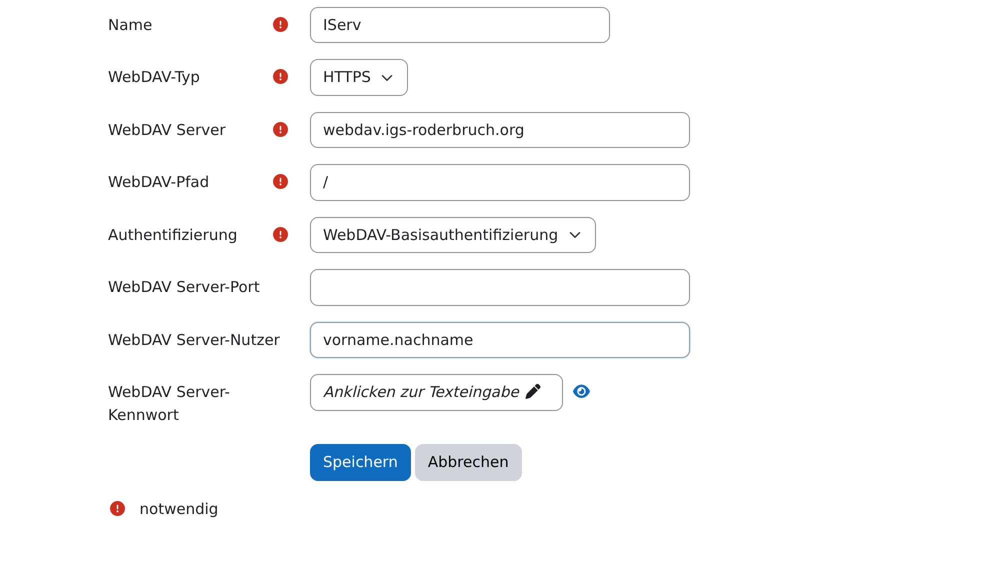
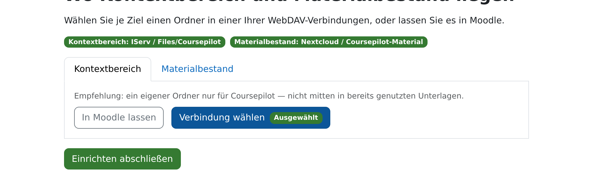
Files/Coursepilot.Moodle speichert das Kennwort einer WebDAV-Verbindung im Klartext. Bietet dein Speicher ein eigenes App-Passwort an, nimm das statt deines Kontopassworts.
Nextcloud: die Abweichungen
- WebDAV Server: die Adresse der Nextcloud ohne
https://, z. B.cloud.meine-schule.de. - WebDAV-Pfad:
/remote.php/dav/files/<nextcloud-benutzername>/ - Kennwort: ein App-Passwort aus deiner Nextcloud (Persönliche Einstellungen › Sicherheit › Neues App-Passwort erstellen).
- Ordner frei wählbar; die Wurzel selbst ist nicht wählbar. Am besten ein eigener Ordner nur für Coursepilot.
- Meldet Coursepilot häufig „Speicher drosselt“, sollte die Betreuung deiner Nextcloud deren Einstellung
trusted_proxiesprüfen (siehe Admin-Seite).
Ist der Speicher einmal nicht erreichbar, legt Coursepilot nichts heimlich woanders ab. Es merkt sich nur, dass etwas aussteht, und die KI schreibt es nach, sobald der Speicher wieder antwortet.
Erste Schritte
So läuft ein Gespräch
- Planen: Die KI liest den Kursstand (nur lesend) und schlägt dir einen Plan vor, zuerst als Zusammenfassung, auf Wunsch im vollen Wortlaut.
- Freigeben: Erst wenn du im Chat ausdrücklich zustimmst, z. B. mit „ja, so umsetzen“, schreibt sie in den Kurs. Das ist eine Arbeitsweise, die die KI einhält, keine technische Sperre in Moodle. Das Sicherheitsnetz ist der Änderungsverlauf.
- Umsetzen: Vor dem Schreiben gleicht die KI den Plan noch einmal mit dem Kurs ab. Passt etwas nicht mehr, hält sie an und fragt dich.
Plan, Stand und Entscheidungen hält Coursepilot im Kontextbereich fest (Moodle-Ordner Meine Dateien › coursepilot oder der eigene Speicher). So kann ein späteres Gespräch dort weitermachen. Die Dateien sind normale Textdateien: Du kannst sie lesen, ändern, löschen und weitergeben.
Kurskontext einrichten
Ein kurzes Profil deiner Lerngruppe und deines Fachs hilft der KI, Niveau und Stil zu treffen. Das Einrichten ist freiwillig und startet nur, wenn du es willst. Nötig sind Schuljahr, Klasse oder Lerngruppe und, falls du magst, das Fach.
Richte den Kontext für meine 7a in Naturwissenschaften ein.Die KI fragt die fehlenden Angaben ab, zeigt dir das Profil vor dem Speichern und legt es erst nach deiner Bestätigung an. Namen von Schüler:innen gehören nicht in normale Profile. Ob und wie sie in markierten Dateien stehen dürfen, regelt die Schule; standardmäßig gibt Coursepilot solche Dateien nicht an die KI.
Gestaltungsvorlagen merken
Gelungene Aktivitäten kannst du dir als Vorlage merken lassen, z. B. eine Aufgabe mit bewährten Abgabe-Einstellungen. Coursepilot notiert sie in der Datei templates.md in deinem Kontextbereich und kopiert sie später auf Zuruf in einen anderen Abschnitt oder Kurs. Du kannst die Datei auch von Hand ergänzen.
Bestehende Dateien mit dem Namen vorlagen.md bleiben lesbar. Coursepilot benennt sie nicht automatisch um.
Merk dir die Aufgabe „Präsentation abgeben“ aus meinem Kurs Bio 7a als Vorlage für alle Präsentationsabgaben.Einstiegsprompts
Kopier einen Satz, ersetze die Angaben in eckigen Klammern und füg ihn in den Chat ein. Den weiteren Weg führt die KI; Rückfragen sind normal.
Weiterarbeiten
Mach mit Bio weiter.Sucht offene Planungen zum Fach und fragt nach, falls mehrere passen.
Abschnitt planen
Plane den Abschnitt „[Thema]“ in meinem Kurs [Kursname]: [Anzahl] Stunden, eine Infoseite, eine Aufgabe mit Abgabe und am Ende ein kurzer Mini-Check.Danach prüfst du mit „Zeig mir den ganzen Text der Infoseite.“ und gibst mit „ja, so umsetzen“ frei.
Test und Fragen anlegen
Lege in meinem Kurs [Kursname] im Abschnitt „[Abschnitt]“ einen Mini-Check mit fünf Multiple-Choice-Fragen zu [Thema] an. Zeig mir die Fragen, bevor du sie anlegst.Material einbinden
Im Anhang ist mein Arbeitsblatt. Binde es in meinem Kurs [Kursname] im Abschnitt „[Abschnitt]“ als Datei ein und schreib eine kurze Arbeitsanweisung dazu.Häng die Datei vorher an die Nachricht an. Coursepilot legt sie zuerst auf eine Werkbank in Moodle und baut sie von dort ein.
Bild zuschneiden
Schneide aus [Dateiname] die Abbildung [kurze Beschreibung] aus und setze sie auf die Textseite „[Seitenname]“ in meinem Kurs [Kursname].Die KI zeigt dir eine Vorschau des Ausschnitts, bevor sie ihn einbaut. Zuschneiden geht mit Fotos und Scans, nicht mit SVG-Grafiken.
Aktivität klonen
Kopiere die Aufgabe „[Name]“ aus meinem Kurs [Quellkurs] in den Kurs [Zielkurs], Abschnitt „[Abschnitt]“.Einstellungen und Inhalte gehen mit, Abgaben und andere Daten der Lernenden nicht. Übernommene Abschlussbedingungen meldet dir die KI.
Version wiederherstellen
Zeig mir die Versionen der Textseite „[Name]“ in meinem Kurs [Kursname] und hol den Stand von [Datum] zurück.Weitere Aktivitätsarten
Lege in meinem Kurs [Kursname] im Abschnitt „[Abschnitt]“ ein Glossar „Fachbegriffe [Thema]“ an.Neben Textfeld, Textseite, Link, Verzeichnis, Datei, Abstimmung, Forum, Aufgabe und Test kann Coursepilot weitere installierte Arten wie Buch, Glossar oder Checkliste neu anlegen, aber nicht nachträglich ändern. Soll so eine Aktivität anders werden, legt Coursepilot eine neue Fassung dahinter an und versteckt die alte.
Wenn etwas nicht geht: Werkzeuglücken
Nicht jede Einstellung und nicht jede Aktivitäts- oder Frageart lässt sich über Coursepilot setzen, z. B. Lektionen, SCORM-Pakete, H5P-Aktivitäten oder Sonder-Einstellungen mancher Abgabetypen. Dann sagt die KI das offen und beschreibt dir die Schritte, um es von Hand in Moodle zu erledigen: wo du klickst und was du einträgst. Danach kann das Gespräch normal weitergehen; die KI liest den neuen Stand mit.
Fragen anderer Typen als Multiple Choice (z. B. Lückentext, Zuordnung, STACK) legt Coursepilot über Moodles XML-Import an. Was sich dabei bewährt hat, notiert es auf Wunsch in einer Lerndatei im Kontextbereich, damit es beim nächsten Mal schneller geht.
Ich möchte [Einstellung oder Aktivität]. Wenn Coursepilot das nicht selbst kann, führe mich Schritt für Schritt durch Moodle.Rückgängig machen
Coursepilot speichert zu jeder Aktivität einen Änderungsverlauf, auch für Änderungen von Hand im Moodle-Formular. Zurückholen geht auf zwei Wegen:
- Im Chat: mit dem Einstiegsprompt „Version wiederherstellen“.
- In Moodle, ohne Chat: Öffne im Kurs Coursepilot: Änderungsverlauf, wähl Aktivität und Version, dann Zurückschreiben.
Zurückschreiben legt den alten Stand als neue jüngste Version an; die Aktivität bleibt dieselbe, Links darauf funktionieren weiter. Der Verlauf ist nicht lückenlos: Testfragen über die Reihenfolge hinaus, Bewertungen und zurückgespielte Kurssicherungen stehen nicht darin; bei Buch, Glossar und ähnlichen Arten nur die Grundeinstellungen, nicht Kapitel oder Einträge. Einträge werden nach einem Jahr gelöscht, sofern deine Schule nichts anderes eingestellt hat.
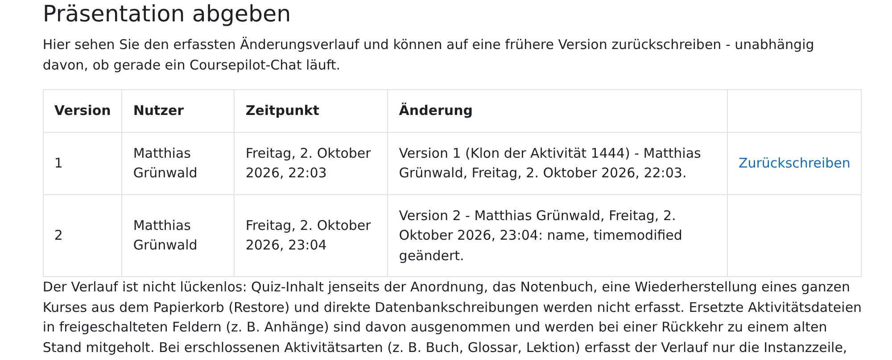
Was die KI sieht und was nicht
| Sieht die KI | Sieht die KI nicht |
|---|---|
| Kurse, in denen du Lehrkraft bist; Abschnitte, Aktivitäten und deren Inhalte (Seitentexte, Aufgabenstellungen, Fragen); deine Coursepilot-Dateien im Kontextbereich; Material, das du ihr gibst. | Abgaben, Forenbeiträge, Testversuche, Bewertungen, Teilnehmerlisten. Dafür gibt es kein Werkzeug; ein automatischer Test stellt das sicher. Dateien, die als personenbezogen markiert sind, solange deine Schule das nicht freigibt. |
Coursepilot selbst schickt nichts an einen KI-Anbieter. Was die KI über Coursepilot liest, geht aber an den Anbieter deines KI-Clients (z. B. Anthropic oder OpenAI) und wird dort verarbeitet. Deshalb gehören keine Namen von Schüler:innen in Pläne oder Material, außer deine Schule erlaubt es ausdrücklich. Die KI arbeitet immer mit deinen eigenen Moodle-Rechten.
Mail-Vorlage für Kolleg:innen
Zum Kopieren und Anpassen (Moodle-Adresse, Name):
Betreff: Moodle-Kurse mit KI-Unterstützung bauen – Coursepilot ausprobieren
Liebe Kolleginnen und Kollegen,
an unserer Schule gibt es seit Kurzem Coursepilot. Damit könnt ihr einen KI-Chat (z. B. Claude oder ChatGPT) mit euren Moodle-Kursen verbinden. Die KI liest den Kursstand, schlägt einen Plan vor und legt Abschnitte, Seiten, Aufgaben und Tests erst nach ausdrücklicher Freigabe an. Jede Änderung könnt ihr in Moodle zurückholen.
Die KI sieht keine Abgaben, Bewertungen oder Teilnehmerlisten. Coursepilot ist noch in der Beta-Phase.
So geht es los:
1. Meldet euch kurz bei mir, dann wird euer Zugang in Moodle freigeschaltet.
2. Folgt der Anleitung: https://matthiasgruenwald.github.io/moodle-coursepilot/de/teachers.html
3. Anschlussadresse: https://[moodle-adresse]/local/coursepilot/mcp.php
Für den Anfang reicht ein Satz wie „Plane den Abschnitt ‚[Thema]‘ in meinem Kurs [Kursname]“.
Bei Fragen meldet euch gern.
Viele Grüße
[Name]